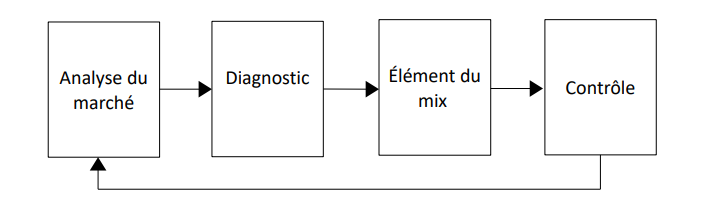
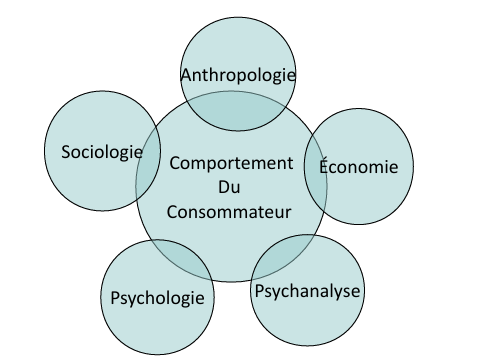
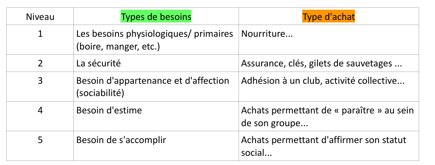
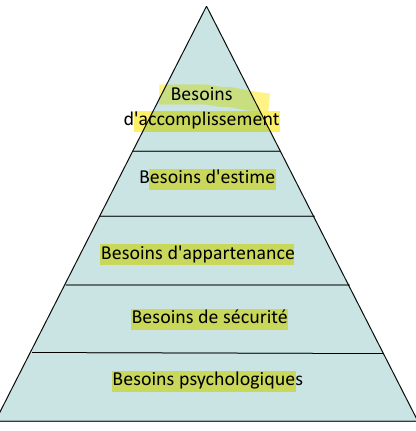
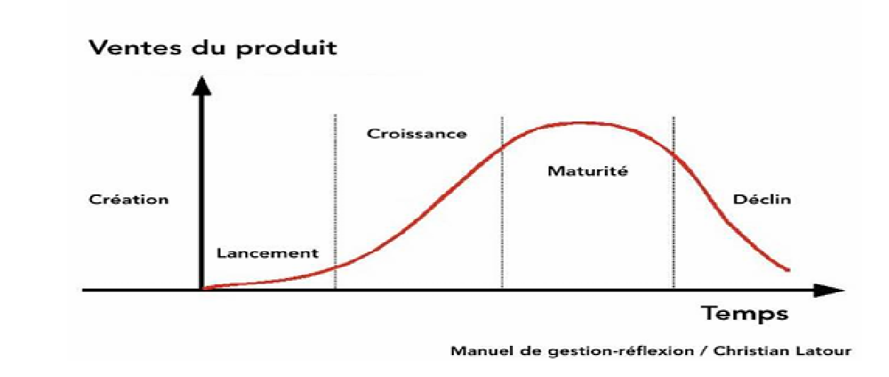
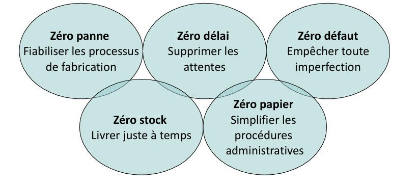
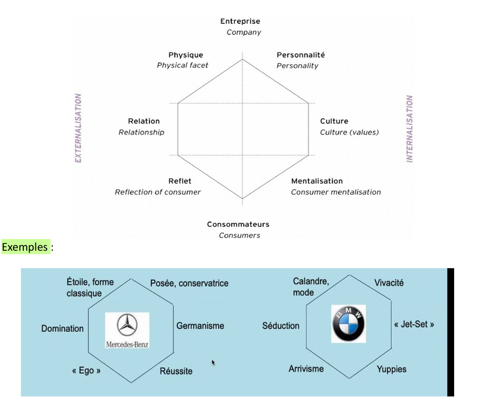
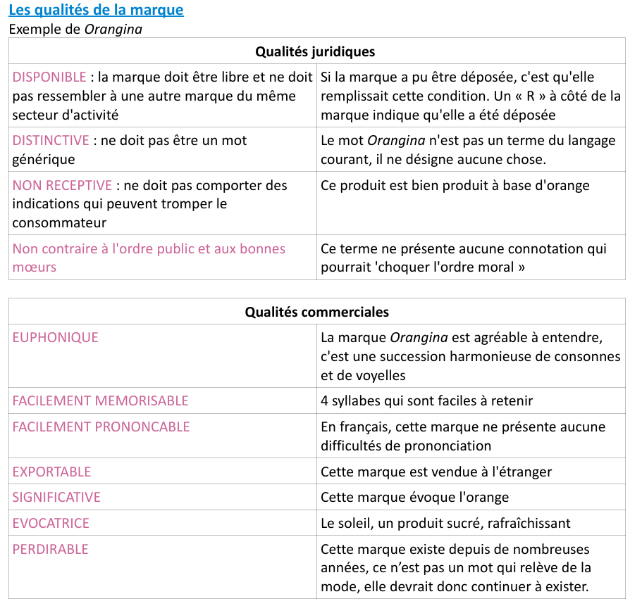
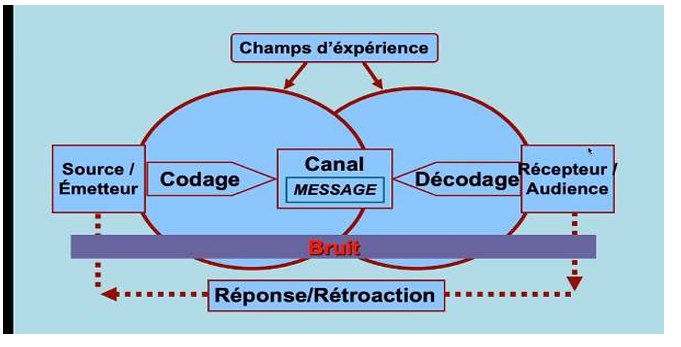

Cours de Marketing
Chapitre 1 : Introduction au Marketing
Définition :
Le marketing est un processus d’échange visant à identifier et satisfaire les besoins des consommateurs, tout en optimisant le profit de l’entreprise. Il repose sur 4 conditions :
- Existence d’un besoin.
- Satisfaction de ce besoin.
- Lien entre l’entreprise et le consommateur.
- Optimisation du profit et de l’image de l’entreprise.
Évolution Historique :
- Années 1920 : Optique production (ex. Ford T : production de masse à bas prix).
- Années 1950 : Dualité optique produit (qualité technique) et optique vente (publicité agressive).
- Post-1950 : Orientation client (analyse des besoins des marchés cibles).
Exemple Pratique :
Cas Smart : Échec initial (2000) dû à un prix élevé, une communication mal ciblée et des problèmes techniques. Succès après ajustements : gamme élargie, prix réduits, communication explicative (ex. journées portes ouvertes).

Chapitre 2 : Le Comportement du Consommateur
Définition :
Étude des processus décisionnels (psychologiques, sociologiques) liés à l’achat et à l’utilisation de biens/services.
Concepts Clés :
Pyramide de Maslow : Hiérarchie des besoins (physiologiques > sécurité > appartenance > estime > accomplissement).
Exemple : Une marque de luxe (ex. Rolex) cible le besoin d’estime ; un club sportif répond au besoin d’appartenance.
Motivations d’achat :
- Hédonistes (plaisir personnel : ex. cinéma).
- Oblatives (faire plaisir aux autres : ex. cadeaux).
- Auto-expression (affirmer son identité : ex. vêtements de marque).
Freins : Rationnels (prix) ou irrationnels (peur de l’innovation).
Processus d’Achat :
- Reconnaissance du besoin (ex. smartphone obsolète).
- Recherche d’information (sources commerciales, personnelles).
- Évaluation des options (risques perçus : financier, social).
- Décision et achat (influence des promotions).
- Évaluation post-achat (risque de dissonance cognitive : ex. regret après un achat impulsif).



Chapitre 3 : Les Études de Marché
Définition :
Analyse de la demande, de l’offre et de l’environnement pour guider les décisions stratégiques.
Outils :
Segmentation : Découpage du marché en sous-groupes homogènes.
Exemple : Le lait bio pour enfants (segment "santé") vs. lait entier en milieu rural (segment "tradition").
Critères :
- Démographiques (âge, revenu).
- Comportementaux (fidélité à la marque).
- Styles de vie (ex. "écologiques", "urbains").
Analyse Concurrentielle :
Part de marché : Calcul en volume (unités vendues) ou valeur (chiffre d’affaires).
Exemple : Une entreprise avec 1M€ de CA sur un marché de 3M€ a 33,3% de part de marché en valeur.
Positionnement : Leader, challenger ou suiveur.
Exemple :
Marché du lait en France :
- Demande : Préférence pour les petits conditionnements (enfants) et les produits "légers".
- Offre : Concentration autour de marques comme Candia (16,5% de part de marché).
Chapitre 4 : Le Produit
Définition :
Un produit est une offre tangible ou intangible répondant à un besoin, caractérisé par :
Cycle de vie : Lancement > Croissance > Maturité > Déclin.
Exemple : L’iPhone évolue avec des innovations régulières (ex. modèle Pro) pour prolonger sa maturité.
Mix Produit : Largeur (nombre de gammes), profondeur (variantes dans une gamme).
Stratégies :
- Gamme large (ex. Renault avec des modèles économiques et premium).
- Gamme courte (ex. marques de luxe comme Hermès).
Lancement d’un Nouveau Produit :
- Génération d’idées (ex. études de consommateurs).
- Tests (ex. prototypes de chaussures Bexley validés en atelier).
- Positionnement (ex. Orangina : marque euphonique et évocatrice du soleil).
Exemple :
Smart : Repositionnement réussi après un échec initial grâce à une communication adaptée et une gamme élargie.




Chapitre 5 : La Communication
Définition :
Ensemble des actions pour informer, persuader et fidéliser les cibles (consommateurs, distributeurs).
Stratégies :
Communication média (TV, radio, internet) :
Exemple : La campagne Telelangue (TV + affichage) triple les inscriptions en 3 semaines.
Hors-média (marketing direct, parrainage) :
Exemple : HSBC soutient des projets éducatifs pour améliorer son image.
Objectifs :
- Cognitifs : Notoriété (ex. publicité Coca-Cola).
- Affectifs : Image positive (ex. films émotionnels de Max Havelaar).
- Conatifs : Action immédiate (ex. promotions Carrefour).
Plan Média :
- Choix des supports : Coût par mille contacts utiles (ex. Capital vs. Moniteur des TPB).
- Création publicitaire : Axe (argument central), concept (ex. Jacques Vabre et le café authentique).

Chapitre 6 : La Distribution
Définition :
Ensemble des canaux permettant d’acheminer un produit du producteur au consommateur.
Types de Circuits :
- Direct : Vente en ligne (ex. site Dyson).
- Court : 1 intermédiaire (ex. franchise Nuxe en pharmacie).
- Long : Grossistes + détaillants (ex. produits alimentaires).
Stratégies :
- Intensive : Maximiser la couverture (ex. Coca-Cola en grande distribution).
- Sélective : Contrôle des points de vente (ex. Apple Stores).
- Exclusive : Distribution haut de gamme (ex. Rolex chez des horlogers agréés).
Marchandisage :
Techniques : Présentation verticale (ex. rayons Danone), PLV (Publicité sur Lieu de Vente).
Exemple : Ecomarché augmente ses ventes de 20% en optimisant l’agencement des rayons surgelés.
Synthèse
Ce cours aborde le marketing comme une démarche holistique : de l’analyse des besoins (Maslow) à la gestion des 4P (Produit, Prix, Promotion, Place), en passant par les études de marché et la distribution. Les exemples concrets (Smart, Orangina, HSBC) illustrent l’importance de l’adaptation et de l’innovation pour répondre aux attentes des consommateurs et surpasser la concurrence.